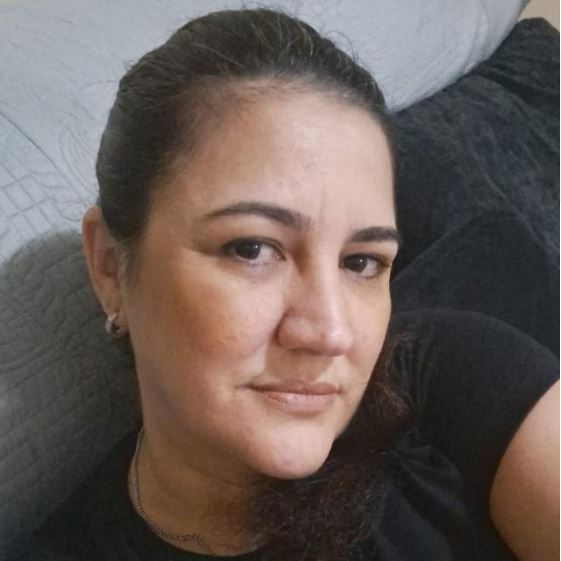

Mãe

Foto da Simone
Auto biografia
- Nasceu em Porto Ferreira, no dia 05/04/1977
- Tem 4 filhos, sendo o Gabriel o mais velho, Sofia a do meio, e a Beatriz e a Laura que são gêmeas
- É filha de Iracema Dessio de Barros e João Augusto de Barros
- Casada com Delson Monteiro Lopes
- É atualmente manicure e auxiliar odontologica, mas também já trabalhou com parte da estética
- A maior parte da criação dos filhos foi feita por ela, já que o marido sempre viajou a trabalho
Um pouco sobre sua história
Foi sempre uma refência de mulher batalhadora pelas pessoas que a conhecem, e principalmente para os filhos. Presente em grande parte da infância das crianças, mas conforme as necessidades foram surgindo ela teve que trabalhar no máximo de tempo que tinha livre.
Uma mãe, amiga, esposa amorosa, carinhosa e sempre muito atenciosa e preocupada com todos ao seu redor. Sempre valorizou a importância da relação entre os irmãos, como é importante terem confiança nos pais e um no outro.
Adora chocolate ao leite, principalmente com amendoim, e branco se tiver pedaços de bolacha de chocolate. Adora buquê e se emociona com facilidade, principalmente quando o assunto são seus filhos.
Ama um samba, realizou um sonho recentemente de conhecer o barracão da Sapucaí no Rio de Janeiro e sambou e sorriu como nunca. Adora uma praia e uma cachoeira.
Já morou em Manaus, São Paulo e Porto Ferreira, que é onde mora atualmente.